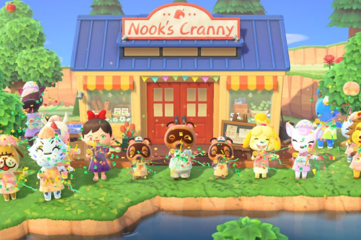

Our History
Click on the images below to see our history!

Welcome to Laputa Island's Nook Shop! We're the go-to store for all your needs on the island. From furniture and clothing to tools and DIY recipes, we've got everything you need to create the island of your dreams. Our friendly staff is always ready to help!
We're passionate about bringing your island vision to life. We're committed to providing a fun and enjoyable shopping experience for all. Come see us today and let us help you create your dream island!
As the owners of Laputa Island's Nook Shop, Timmy and Tommy are two of the most important and recognizable faces on the island! These twin raccoons are always hard at work, keeping the store stocked with the latest items and providing top-notch customer service to all our visitors. They may be young, but they're savvy businesspeople with a keen eye for a good deal.
In addition to running the store, Timmy and Tommy are beloved members of the island community. They're always eager to lend a helping hand to you, whether it's by providing a special discount on a rare item or simply offering a friendly smile and a listening ear.
Timmy and Tommy are never too busy to stop and chat with visitors to the store. Always be sure to drop by and say hello to these lovable raccoons!
The Nook Shop is a beloved shop located at the heart of the Laputa Island. Established in 2019, it has become a staple of village life, offering a wide range of goods and services to the local community. The history of the Nook Shop is a fascinating one, filled with ups and downs, triumphs and setbacks, and a whole lot of hard work.
When the Nook Shop first opened its doors in 2019, it was a humble little store, run by the hardworking Tom Nook. At first, the shop offered only a few basic items, such as furniture and clothing. But as the months went by, Tom Nook and his team of dedicated employees began to expand their offerings, adding new items to their inventory and improving their services.
In 2020, the Nook Shop underwent a major renovation, expanding its premises and adding a wide range of new features. Customers could now browse through an even wider selection of goods, including rare and exotic items that were not available anywhere else in the island. The shop also offered a range of new services, such as home renovation and landscaping, helping villagers to create their dream homes and gardens.
The history of the Nook Shop is a story of growth, innovation, and perseverance. From its humble beginnings in 2019 to its current status as a cornerstone of island life, the shop has come a long way. It is a testament to the power of hard work, creativity, and community spirit, and a shining example of what can be achieved when people work together towards a common goal.